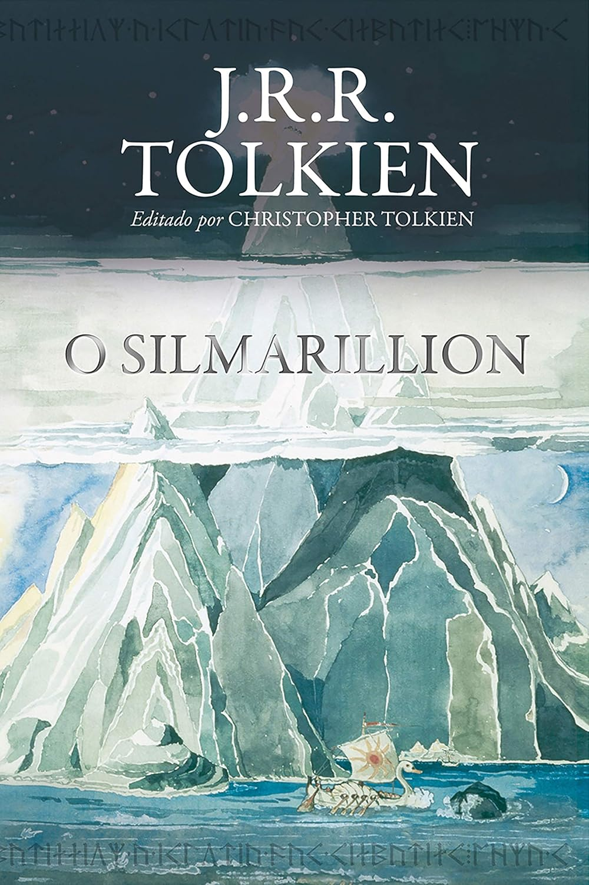
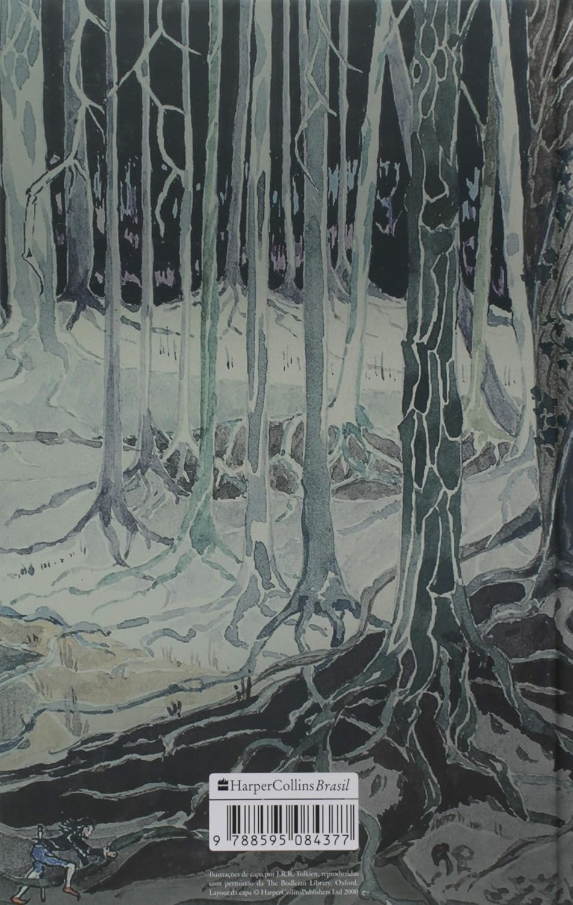
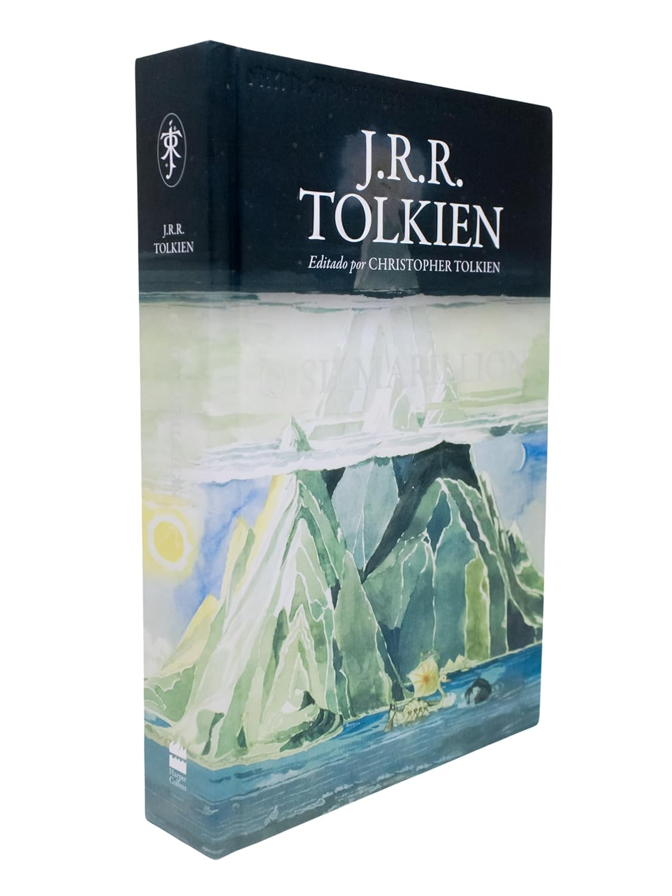
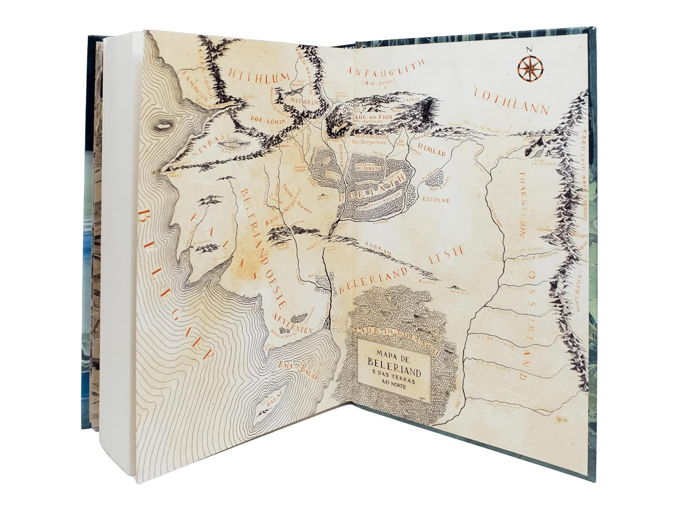

O Silmarillion
J.R.R Tolkien
O Silmarillion é o relato dos Dias Antigos da Primeira Era do mundo criado por J.R.R. Tolkien. É a história
longínqua para a qual os personagens de O Senhor dos Anéis e O Hobbit olham para trás, e em cujos eventos
alguns deles, como Elrond e Galadriel, tomaram parte. Os contos de O Silmarillion se passam na época em que
Morgoth, o Primeiro Senhor Sombrio, habitava a Terra-média, e os Altos-Elfos guerreavam contra ele pela
recuperação das Silmarils, as joias que continham a pura luz de Valinor. O livro começa com o "Ainulindalë",
o mito da criação do Universo, seguido pelo "Valaquenta", onde estão descritas a natureza e os poderes de
cada um dos deuses. Em o “Quenta Silmarillion” há o início da contagem dos dias em Arda (o mundo onde está
inserido o continente da Terra-média), a história dos Elfos na Terra Abençoada do Oeste, seus êxodos e o
desenrolar das guerras élficas em Beleriand, que culminaram com o final da Primeira Era. O "Akallabêth"
narra o apogeu e a queda do reino da grande ilha de Númenor no final da Segunda Era. Por fim, "Dos Anéis de
Poder" fala dos grandes eventos no final da Terceira Era, como narrado em O Senhor dos Anéis.
O livro começa com "O Ainulindalë", o mito da criação do Universo, seguido pelo "Valaquenta", onde estão
descritas a natureza e os poderes de cada um dos deuses. O "Akallâbeth" narra o apogeu e a queda do reino da
grande ilha de Númenor no final da Segunda Era e "Dos Anéis de Poder" fala dos grandes eventos no final da
Terceira Era, como narrado em "O Senhor dos Anéis".
O Que Esperar
Veja Detalhes
Capa: Dura
496 páginas
Idioma: Português
Editora: HarperCollins
Data da publicação: 19 março 2019
Comprar